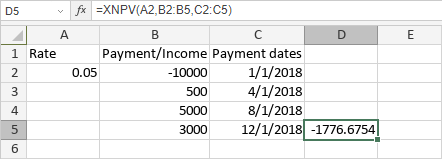

XNPV funkcija
Funkcija XNPV je jedna od finansijskih funkcija. Koristi se za izračunavanje neto sadašnje vrednosti investicije na osnovu specificirane kamatne stope i rasporeda neregularnih uplata.
Sintaksa
XNPV(rate, values, dates)
XNPV funkcija ima sledeće argumente:
| Argument | Opis |
|---|---|
| rate | Kamatna stopa za investiciju. |
| values | Niz koji sadrži iznose prihoda (pozitivne vrednosti) ili uplata (negativne vrednosti). Najmanje jedna vrednost mora biti negativna i najmanje jedna pozitivna. |
| dates | Niz koji sadrži datume uplata kada se uplate vrše ili primaju. |
Napomene
Kako primeniti XNPV funkciju.
Primeri
Na slici ispod prikazan je rezultat koji vraća XNPV funkcija.
